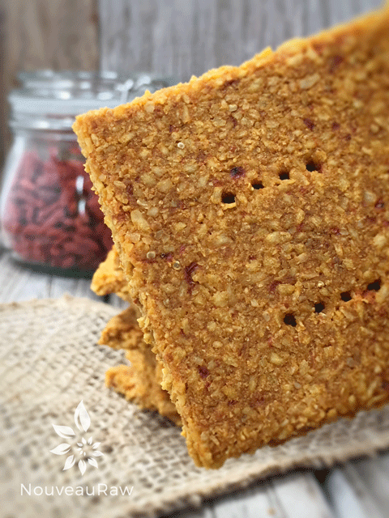

Goji Berry Banana Coconut Crackers

~ raw, vegan, gluten-free, nut-free ~
I am about eight recipes in on this cracker formula, which I have to say, has been so much fun. The variety of ingredients that compliment the coconut base seems to be rather endless… both on the sweet and savory end of things.
Currently, I have a plethora of goji berries. I was gifted a very large quantity a while back and I am still working my way through them. I actually had to pay for the berries but I was given such a ridiculously good price that I felt as though they were a gift.
Go..go…goji berry!
I used goji berries in this recipe for their color, and flavor but also because they are an excellent source of antioxidants, flavonoids, carotenoids and vitamins A, C and E. The really impressive part is that they contain approximately 500 times more vitamin C per weight than an orange and considerably more beta-carotene than carrots. That’s pretty darn snazzy if you ask me.
Tip of the Day
When it comes to crackers, everyone wants to know… “Are they crunchy?” Yep… they are very crunchy and very sturdy. You wouldn’t think so, but I promise that I am not pulling your leg here. To get a nice compact cracker, I like to roll them out with none other than a rolling pin. I place the batter on the non-stick sheet that comes with the dehydrator, place a piece of plastic wrap on top, and then roll them out nice and even. Be sure to remove the plastic wrap before dehydrating.
yields 36 crackers
- 2 large ripe bananas (320 g) ripe bananas
- 1/2 cup (235 g) goji berries, rehydrated
- 1 /2 tsp Himalayan pink salt
- 4 cups (365 g) shredded coconut
- 10+ drops liquid NuNaturals stevia; to taste
Preparation:
- If need be, re-hydrate the goji berries so they are soft. Soak them in enough warm water to cover them for about 15 minutes. When ready to use, drain and hand-squeeze the excess water from them.
- Blend the bananas, goji berries and salt in a food processor, fitted with the “S” blade, until creamy.
- Taste and see if any sweetener needs to be added. Do so at this time.
- If stevia is not your thing, start with 1 Tbsp of liquid sweetener of choice and work up if needed.
- Add shredded coconut, processing till well mixed.
- Line the dehydrator tray with a non-stick teflex sheet.
- Spread the batter from edge to edge.
- Make sure that you spread it evenly so it dries evenly.
- Wipe the edges clean.
- Score the crackers into desired shapes and sizes. You can use a pizza cutter or a long metal ruler to create the score marks.
- Dehydrate at 145 degrees (F) for 1 hour, then reduce to 115 degrees (F) and continue drying for up to 24 hours… until dry and crispy.
- Snap apart and let cool before storing in an airtight bag/container.
- They should last several weeks in the pantry and can be frozen for 1-2 months. If they start to soften due to humidity, throw them back in the dehydrator to crisp up.
Culinary Explanations:
- Why do I start the dehydrator at 145 degrees (F)? Click (here) to learn the reason behind this.
- When working with fresh ingredients it is important to taste test as you build a recipe. Learn why (here).
- Don’t own a dehydrator? Learn how to use your oven (here). I do however truly believe that it is a worthwhile investment. Click (here) to learn what I use.

© AmieSue.com